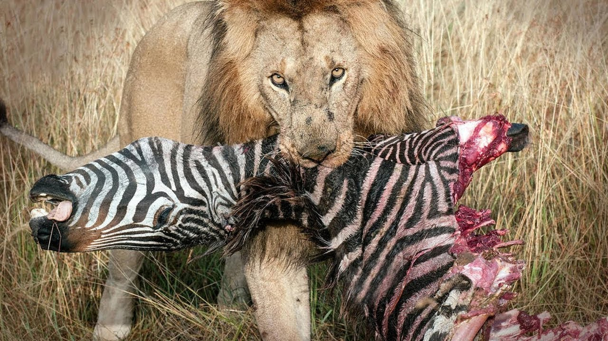
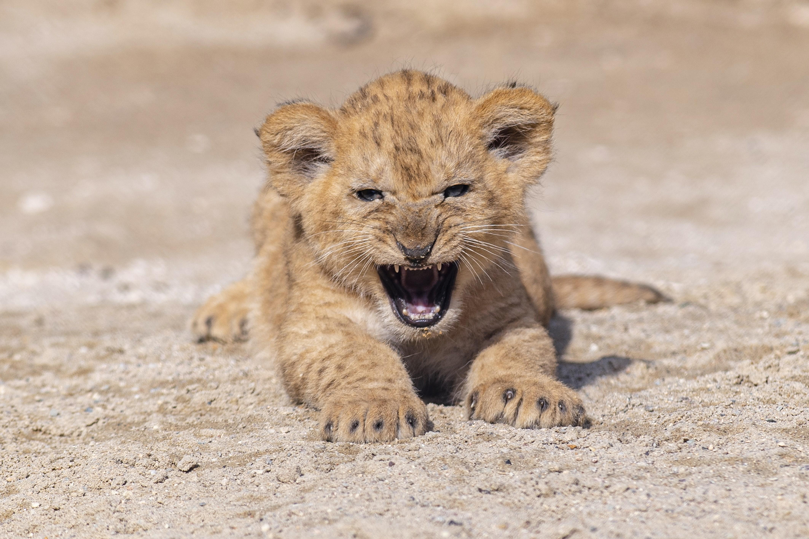

Hábitat del león
El león es una especie que se ha adaptado a la vida en las sabanas africanas y en una reducida zona del noreste de la india.
La mayoría de los actuales leones suelen habitar en el Este y Sur de África, en la cuál se estima que los adultos de la población no
supera los mil ejemplares.
Ubicación geográfrica

Alimentación del león
Uno de los rasgos que caracteríza a los leones, es la cacería, la dieta de estos felinos, es puramente carnívora, y muy pocas ocasiones recurren a la carroñería.
Es común a la hora de describir a los leones como algo torpes físicamente y que no son tan veloces y ágiles como parecen. son unos estrategas en lo que a la
búsqueda de comida se refiere. Lo que lo diferencia del resto, es que los leones cazan en grupo, no en solitario, en la cuál cada integrante del grupo tiene
su rol y saben que posición tomar dentro del territorio.
En la lógica de la táctica de ataque, los leones son unos expertos. Comienzan rodeando el perímetro de la presa, y reduciendo sus posobilidades de escape. Saben que no son más veloces que una gacela, asi que se van acercando con sigilo, hasta llegar lo suficientemente cerca para sorprender al otro animal.
En la lógica de la táctica de ataque, los leones son unos expertos. Comienzan rodeando el perímetro de la presa, y reduciendo sus posobilidades de escape. Saben que no son más veloces que una gacela, asi que se van acercando con sigilo, hasta llegar lo suficientemente cerca para sorprender al otro animal.
| Subespecie de león | Presas y dieta |
|---|---|
| León de Atlas | Antílopes, cebras y búfalos. |
| León sudafricano | Antílopes, cebras, ñus, búfalos, jirafas y avestruces. |
| León asiático | Ciervos, búfalos de agua, chitales, antílopes y jabalíes. |
 |
 |  |
Reproducción del león
Su reproducción comienza a los cuatro años de edad. Hay entre una o cuatro crías en cada camada. En las épocas del celo, machos y hembras llegan a
copular entre 20 y 40 veces diarias. Ya producida la fecundación interna, la gestación, lleva una media de 110 días. Las crías nacen ciegas y tardan una semana
de vida, para abrirlos. La madre se encarga de su cuidado íntegro, las mueve varias veces de madrigueras entre unas nueve y diez semanas que tardan en integrarse
a la manada.
|  |  |
 |
Estado de conservación
Hoy en día es una especie vulnerable, ya que los encuentros con la humanidad, han ocacionado la mermación de su territorio. En pocas regiones del África
subsahariana, han quedado prácticamente confinados.
El conteo total actualmente de los adultos ejemplares no supera los mil, ha disminuido entre un 30% y 50% recientemente, a pesar de habitar reservas naturales y parques nacionales.
El conteo total actualmente de los adultos ejemplares no supera los mil, ha disminuido entre un 30% y 50% recientemente, a pesar de habitar reservas naturales y parques nacionales.